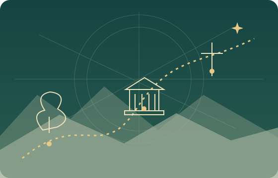

VISÃO PANORÂMICA
Da criação à nova criação.
Percorra a narrativa bíblica, reconheça seus contextos e abra caminhos para estudar as Escrituras.
UMA BIBLIOTECA · UMA NARRATIVA EM MUITAS VOZESEncontre seu lugar
Encontre seu lugar
na história bíblica.
Comece por um período, siga uma família ou leia os Evangelhos em paralelo. Cada caminho leva de volta ao texto.

13 GRANDES PERÍODOS